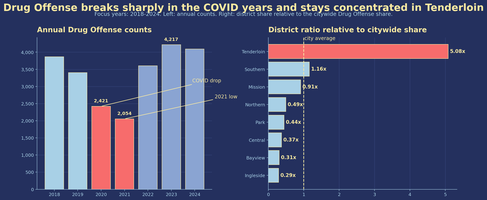

Dataset and framing
The full dataset is the combined San Francisco Police Department incident file we worked with in Weeks 1-7. For this story I use the subset from January 1, 2003 to December 31, 2025. Each row is one recorded police incident, and that matters here, because a recorded Drug Offense is not the same thing as drug use in a neighborhood. It depends on what happens in public and what police choose to record.
To keep the category consistent across the whole period, I use the same harmonization rule as in Assignment 1: Drug Offense combines DRUG/NARCOTIC, Drug Offense, and Drug Violation.
1. The long view still points to the same place
Once I look back to 2003, the pattern does not get weaker. It gets clearer. The counts are high in the mid-2000s. They slide through the 2010s. They drop hard in 2020 and 2021. Then they climb again by 2025. This does not look like a flat city trend. It looks like a category that moves with public life and police activity.
The district chart says the same thing in space. Tenderloin sits far above the rest. Mission and Southern are also high, but they are not close. So this is not a citywide pattern with small local differences. It is a hotspot story.

2. The daily rhythm looks more like police work than nightlife
The second figure shifts from years to hours. The heatmap is strongest from late morning to late afternoon on most weekdays. That surprised me. If this were mostly a nightlife pattern, I would expect much more activity after dark.
The line chart makes the point stronger. Drug Offense and Warrant move almost together by hour. That matches what I saw in Assignment 1. My best guess is simple. Many of these records come from the same kind of stop. Police check someone, find drugs, and also check for a warrant.
3. The map keeps pulling back to Tenderloin
The animated map helps because it shows change without hiding location. The heat gets weaker in some years and stronger in others. But it keeps coming back to the same part of the city. Tenderloin and the blocks around it stay hot for most of the timeline.
The COVID dip shows up here too, but the center of the pattern does not move far. City reporting on open-air drug markets points to the same area. That does not prove a cause. It does make the map easier to read. The key point is persistence over time, not one dramatic frame.
Takeaway
What I take from this is pretty narrow. These records do not give me a clean map of where drug use is highest. They give me a map of where drug activity becomes public, visible, and police facing.
That is why Tenderloin matters here. It is where this category shows up again and again in the data. Still, I do not think the right conclusion is "Tenderloin has more drug use." The safer conclusion is smaller. In this dataset, Drug Offense looks like a record of contact, enforcement, and visibility.
Sources
- San Francisco Police Department incident reports, combined 2003-present course dataset.
- SF.gov, Three-Month Update on Operation to Dismantle Open-Air Drug Markets.